Annalepa in Patna

Rice is the staple of Bihar, and most of us think of it only as food. Ayurveda has long used a particular kind of rice as medicine too, both inside and outside the body. Annalepa, literally "food paste" or "rice paste", is one of the gentlest examples. A warm, creamy paste of medicinal rice cooked in milk and herbs is spread over the body and allowed to rest before being wiped away. If udvartana is the scrubbing, reducing end of Ayurvedic external therapy, Annalepa sits at the nourishing, building end.
What Annalepa is
The rice used is shashtika shali, a short-duration rice traditionally said to ripen in about sixty days (shashti means sixty). In Kerala the variety called navara is used for this purpose. The rice is cooked in a decoction of bala (Sida cordifolia) root and in milk until it becomes soft and thick. The paste is then applied warm to the whole body or to a specific area such as a wasted limb, left for a set time, and scraped off gently with a leaf or a smooth edge before the body is wiped and oiled.
It is closely related to shashtika shali pinda sweda (navara kizhi), where the same cooked rice is tied into cloth boluses and massaged onto the body. Annalepa uses the paste directly instead of a bolus, usually without the rhythmic massage.
Roots in the classics and in Kerala
The classical texts hold shashtika shali in high regard. Charaka Samhita lists it among the best grains and recommends it as wholesome food. The idea of nourishing therapy, brimhana, is a whole branch of treatment in Charaka's Sutrasthana, set against langhana, the reducing therapies. The texts also describe sankara sweda and pinda sweda, forms of heat therapy using boluses of grains and herbs.
The techniques of navara kizhi and Annalepa as practised today were shaped mainly in Kerala, where vaidya families refined them over generations. Their precise age is not documented in sources we can verify. So, as with several of the external therapies on this site, it is fair to describe Annalepa as a regional technique built on classical principles: the classical value of shashtika rice and milk, and the classical branch of brimhana therapy, applied as an external paste.
How it is understood to work
Classical reasoning
Vata, with its dry, light and rough qualities, is thought to drive wasting, dryness, stiffness and weakness of muscles. Milk, bala and shashtika rice are all described as heavy, unctuous, cooling and nourishing, which counters those qualities. Applied externally, the warm paste is believed to soften the skin, nourish the muscle tissue (mamsa dhatu) and calm vata. Because it is nourishing rather than heating, it may also be preferred where some heat or inflammation is present.
Modern research
Research specifically on Annalepa is minimal. The closest published work concerns shashtika shali pinda sweda. A study published in the journal Ayu in 2013 described its use with medicated ghee in children with cerebral palsy, and another Ayu paper in 2014 described the management of spastic cerebral palsy with several Ayurvedic modalities. These are small, specialised clinical reports, not proof that Annalepa treats any disease, and they are not about adults with general complaints. We mention them only to show the kind of evidence that exists. For most uses, Annalepa rests on traditional reasoning and clinical experience.
Who may benefit
- People who are underweight, weak or recovering from illness, after the cause has been assessed
- Elderly patients with dry skin and thinning muscles, where gentle nourishment is wanted
- Some muscle wasting or weakness in a limb, as part of a wider plan with physiotherapy where needed
- Very dry, rough skin linked with vata
- Patients who cannot tolerate vigorous massage
Who should avoid it
- People with obesity, high kapha, heaviness, sluggish digestion or coated tongue, for whom reducing therapies such as udvartana are generally more appropriate
- Those with significant ama: indigestion, loss of appetite, bloating
- Fever, acute infection or active skin infection
- Open wounds in the application area
- Milk or rice allergy
- Uncontrolled diabetes, where heavy nourishing therapy needs careful judgement
Weight loss and muscle wasting can signal serious illness. Annalepa is never a substitute for finding the cause, and you should continue any medicine your doctors prescribe.
At Sabka Ved Wellness
Consultation
Dr. Aditya Kunal first looks at why you are weak or dry. Because his focus is gut and metabolic health, he pays close attention to appetite and digestion: nourishing external therapy works best when the digestive fire can actually build tissue. Sometimes digestion needs attention before Annalepa is useful.
Preparation of the paste
Bala root is boiled into a decoction. The shashtika or navara rice is cooked in that decoction with milk until thick and creamy. This takes time and must be done fresh for each patient, because cooked rice and milk spoil quickly.
The session, step by step for understanding
- A light medicated oil may be applied to the body first.
- The warm paste is spread evenly over the whole body or the selected area, checking temperature carefully.
- You rest for the set time, usually around 20 to 40 minutes, and the paste is kept from drying out.
- The paste is scraped off gently.
- The body is wiped clean and oiled lightly, and you rest before a warm bath later as advised.
This is for understanding only, not a home recipe.
Aftercare and diet
Keep warm, avoid cold baths and cold wind, and eat warm, easily digested, nourishing food: rice, moong dal, ghee in moderate amounts, milk if it suits you and seasonal vegetables. Avoid heavy fried food that the gut may struggle with.
What people usually notice
Most patients describe Annalepa as warm, heavy and comforting rather than stimulating. The paste feels like a soft blanket on the skin, and many people become drowsy during the resting period. Afterwards the skin often feels softer and less tight. Some people notice they are hungrier on treatment days, which is generally a welcome sign in someone who is underweight, though appetite should always be met with easily digested food. If you feel heaviness, sluggishness or loss of appetite instead, tell the doctor, because it may mean the therapy is too heavy for your digestion at that moment and the plan needs adjusting. Annalepa should leave you feeling nourished, never weighed down.
Because the paste is cooling by nature but applied warm, it is usually comfortable across most of the year in Patna. In the coldest weeks the room is kept warm and the paste temperature checked more often.
Why it costs what it costs
Annalepa uses specific medicinal rice, which is more expensive and harder to source than ordinary rice, along with fresh milk and freshly prepared bala decoction for every session. Preparation takes significant kitchen time before the therapy even begins. Add therapist time, single-patient linen that needs heavy washing and doctor supervision of the plan. We do not list prices because plans differ, but you will know what is included before you start.
Annalepa, navara kizhi and udvartana
| Therapy | Material | Direction |
|---|---|---|
| Annalepa | Rice paste in milk and bala | Nourishing (brimhana) |
| Navara kizhi | Same rice in cloth boluses with massage | Nourishing, with heat |
| Udvartana | Dry herbal powder rubbed upward | Reducing (langhana) |
Book a consultation
If you are recovering, weak or troubled by dryness and want to know whether Annalepa suits you, book a consultation with Dr. Aditya Kunal. Use our appointment page or book online at superprofile.bio/bookings/dradityakunal.
Sources
We also serve patients from


Preparation, therapy, recovery. In that order.


Related therapies
Pages that pair naturally with this one.


Questions about Annalepa

Annalepa is an Ayurvedic therapy in which warm shashtika (navara) rice, cooked in milk and bala decoction, is spread on the body as a paste, left for a set time and then removed. It is a nourishing therapy.
Both use the same cooked rice. In navara kizhi the rice is tied into boluses and massaged on the body; in Annalepa the paste is applied directly and left to rest.
No. Annalepa is a nourishing therapy. People seeking weight reduction are usually advised reducing therapies such as udvartana instead.
Very little. Related studies on shashtika shali pinda sweda exist, mainly small reports in children with cerebral palsy. Annalepa largely rests on traditional reasoning.
Commonly 7 to 14 sessions, decided after assessment.
